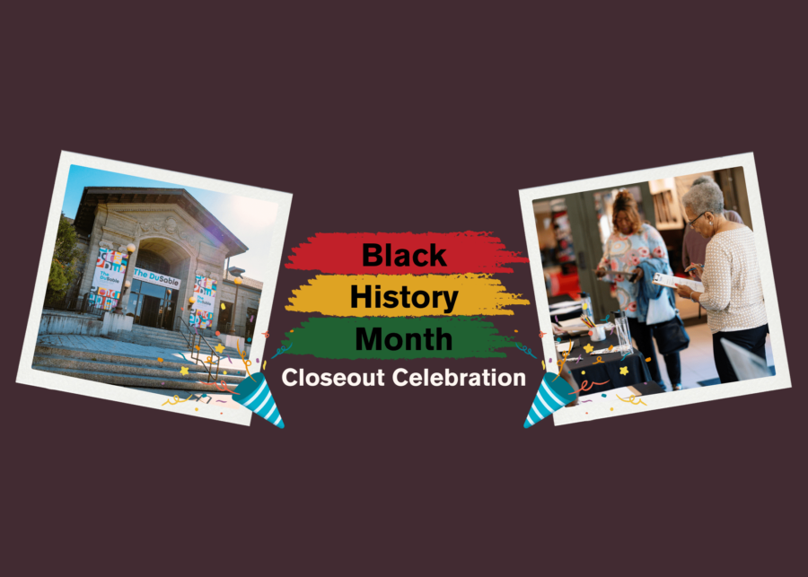

Black History Month Closeout Celebration
Black History Month Closeout Celebration
To conclude The DuSable’s 2026 Black History Month programming, we will be hosting several performances at the theater on the final day of February. From musical productions and film screenings to community discussions and choir performances, the Closeout Celebration will recognize the incredible, enduring power of Black History and cultural heritage. Date: Saturday, February 28, 2026 Time: 10 am – 7:30 pm Location: IBLA Each event during the Closeout Celebration is FREE and open to the community.
Programming Schedule:
1619: The Journey of a People, the Musical. 10:30 am – 11:30 am
Sankofa Chicago Screening and Panel Discussion. 1:30 pm – 3:30 pm ·
World-Renowned Leo High School Choir w/special guest Dilla. 6:30 pm – 7:30 pm